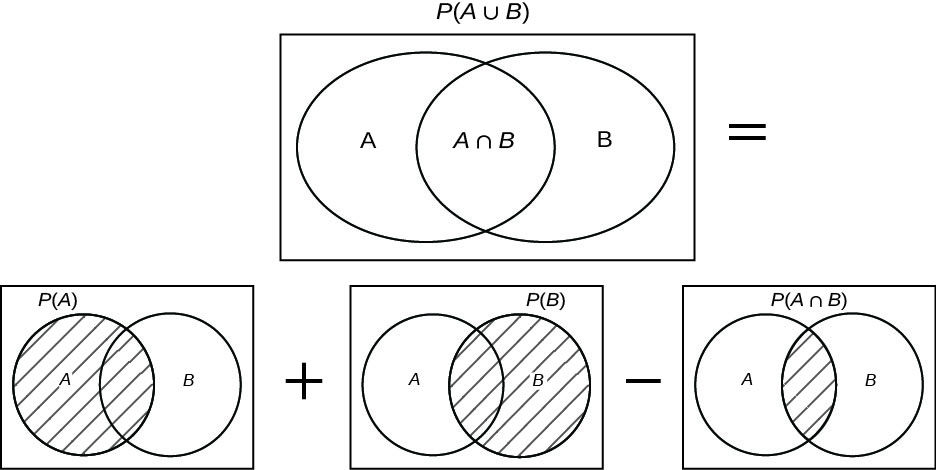

Laws of Probability¶
Introduction¶
Given a sample space \(S\), the probabilities assigned to events must always satisfy the three laws of probability, which are listed below.
Laws of Probability¶
Law 1
\(P(S) = 1\), where \(S\) is the state space.
Law 2
For any event \(A\), \(0 \leq P(A) \leq 1\). The probability of an event can never be negative or larger than \(1\).
Law 3
For two disjoint events \(A\) and \(B\) (disjoint means that \(A \cap B = \emptyset\)), \(P( A \cup B) = P (A) + P(B)\).
For two events \(A\) and \(B\), it always holds that \(A \cap B \leq P(A)\) and also that \(A \cap B \leq P(B)\). The Venn diagrams below show this trivial implication.
{kind=link}
Examples¶
Linda is 31 years old, single, outspoken, and very bright. She majored in philosophy. As a student, she was deeply concerned with issues of discrimination and social justice, and also participated in anti-nuclear demonstrations.
Question: Which of the following eight options is more likely for Linda to be?
Linda is a teacher in elementary school.
Linda works in a bookstore and takes Yoga classes.
Linda is active in the feminist movement.
Linda is a psychiatric social worker.
Linda is a member of the League of Women Voters.
Linda is a bank teller.
Linda is an insurance salesperson.
Linda is a bank teller and active in a feminist movement.
Solution
Out of the eight possible events that we have, it is possible to say something about the relative likelihood of the following three events:
(3) Linda is active in the feminist movement.
(6) Linda is a bank teller.
(8) Linda is a bank teller and active in a feminist movement.
First, let \(A\) be the event that Linda is a bank teller and \(B\) be the event that Linda is active in a feminst movement. By using trivial implication, we get:
\(A \cap B \leq P(A)\),
\(A \cap B \leq P(B)\),
Therefore the event that Lisa is active in a feminist movement and also a bank teller is less likely than that she is only a bank teller.